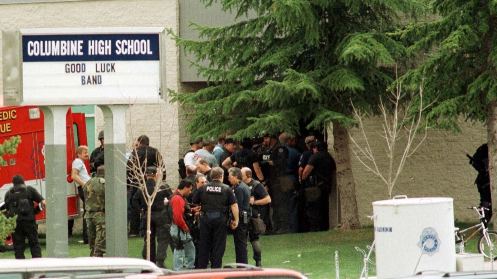
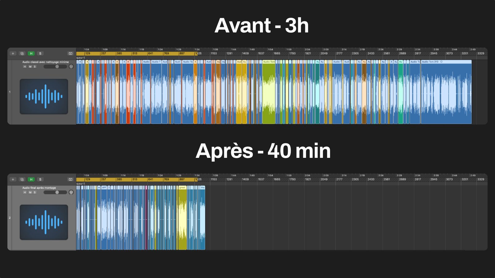

Condensation éditoriale et montage son d'une interview en anglais de près de 3 h vers un épisode final d'environ 40 minutes.

Pendant mon stage chez Coco & Co Prod, j'ai pris en charge le montage son d'une interview longue en anglais. Le travail principal consistait à passer d'un matériau brut d'environ 3 heures à une version publiée de 40 minutes, sans perdre les informations clés ni la cohérence du récit.
Le projet combinait donc deux exigences fortes : une condensation éditoriale rigoureuse et une qualité de rendu audio suffisamment propre pour la diffusion publique.
Le vrai travail ne consistait pas seulement à "raccourcir" l'interview, mais à reconstruire un épisode écoutable à partir d'un matériau long, dense et parfois redondant. Il fallait préserver le sens, la progression du propos et la personnalité de l'intervenant, tout en supprimant ce qui freinait l'écoute.
La logique de coupe a été guidée par l'information utile : garder les passages qui apportent une valeur narrative claire, et retirer ce qui ralentit l'écoute sans enrichir le fond.
Concrètement, je cherchais à conserver les passages qui faisaient progresser le récit, apportaient un angle fort ou précisaient une idée importante, et à retirer les détours, répétitions ou transitions faibles qui alourdissaient l'ensemble.
Le projet avançait par itérations courtes avec des points de validation réguliers avec le maître de stage. Pour tenir le délai, j'ai travaillé avec un planning de montage précis (sélection, assemblage, nettoyage, mix, export) et des exports intermédiaires pour sécuriser les choix éditoriaux.

Slot visuel 02 : audiovisuel3-02-avant-apres-3h-40min.webp
La principale difficulté était de faire disparaître le travail de coupe à l'écoute. Un bon résultat ne devait pas donner l'impression d'un assemblage brutal, mais d'une parole fluide, structurée et cohérente du début à la fin.
La phase de post-production audio a visé un rendu propre, naturel et homogène sur toute la durée de l'épisode.